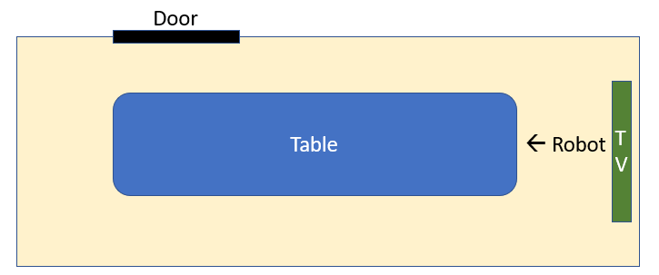

Learning to code as a grad student
These days, coding is a hot topic, and learning to code an even hotter one. As a graduate student, you are often thrown some bits of code here and there, and expected to soak up everything…pretty much on your own.
Why should you become proficient in coding as a graduate student?
- It's necessary for conducting psychological experiments
- It reduces the possibility of human error (often linked to doing things by hand) in data analysis stages
- It allows for open science practices (e.g., people know exactly how you analyzed your data)
- It allows for reproducible science (e.g., people can repeat what you previously did, and obtain the same results)
- It is a transferable skill, whether you decide to stay in academia or not
(Disclaimer: I am not a professional programmer, simply a graduate student eager to learn and share. )
Unlike many graduate students in my field, I was lucky enough to receive some formal coding training and experience in my undergraduate program. The program, which was designed to train future graduate students in neuropsychology, included psychology courses typically found in psychology majors in addition to coding classes in Javascript and SPSS as well as MATLAB, Python and R for the more computationally inclined.
This does NOT mean I didn't have my fair share of self learning. While I was trained on the more popular software used in academia (SPSS and MATLAB), software like PsychoPy and running online studies was very much learnt on my own. Additionally, even though I had some training in analysis software like SPSS and R, knowledge and experience in data cleaning and preprocessing was grossly lacking. In fact, most of my knowledge in cleaning and preprocessing data in R came from googling things and TAing an undergraduate class in data science.
And this is where my first rule to learning how to code comes in:
1. Learning how to code isn't about learning a coding language, it's learning coding structures and rules.
In other words, don't spend too much time memorizing functions and what they do (you'll end up looking them up on google anyway), instead focus on understanding the core structures like variables, lists, vectors and matrices, loops, and functions. The concept of a universal grammar applies (at least for coding languages): Once you learn one language, coding in another language is just a matter of looking up differences in syntax (e.g., how for loops are written out) and in usage (e.g., indexing starting at 0 and 1)... at least for the coding languages commonly used in psychology research (I can't speak for other fields).
Once you've learned the basic rules and tools of coding, my second rule comes in:
2. Coding is the art of figuring out the intermediate steps to get from point A to point B
In other words, it is learning how to write instructions designed to accomplish a specific goal, and more importantly, realizing that these will be carried out by a naïve individual. To code effectively, it is helpful to be able to visualize intermediate steps. The robot game is a good exercise for developping this kind of computational thinking.
The Robot game: Image there is a robot standing between the table and the TV (facing the table), and you want this robot to open the door. Because it is a robot, it only knows its own state and position (e.g., it is not aware of the objects around it unless it is told to notice them). Your task is to write a list of commands that would allow the robot to open the door in this room.
Obviously, different people will propose different solutions. For example, someone might simply say 1- Turn right, 2-Take two steps forward, 3- Turn left, 4- Take five steps forward. In this case, a robot would run into an error in the first step because it will not know when to stop turning (WARNING: Infinite loop!). This is a simple example showing how important it is to visualize intermediate steps.
A similar way of thinking about it is to see coding as writing a recipe. The following analogy relates particularly to coding analyses. You start out with specific ingredients (data, variables), prepare these ingredients like cutting and mixing ingredients (loops and functions), cook these ingredients (analysis or statistical test) and end up with a final product on which you can add decoration or garnish (plots, results of an analysis).
Once you have learned the universal grammar of coding and have an idea about how to get from point A to B, my third rule to learning how to code comes in:
3. Coding will always start out as inefficient and progressively become efficient.
This is true whether we are talking about your progression as a programmer or your progression throughout a particular script. As someone learning how to code, do not expect your code to be perfect, it won't be. Your code will start out as something very rigid, repetitive and inefficient. However, as you learn more functions, tips and tricks, that style of coding will transition to something more flexible and automated.
Similarly, when working on a script, do not expect to write an entire script the way you would write in a journal. You will probably have to start with an outline of the code (main steps), then implement the core parts of the script while making sure these simpler steps work throughout the process, and then implement more complex aspects throughout the code as your get closer to your desired final product.
If we were to go back to the robot example, using a specific number of steps (e.g., two and five steps) might work for that particular robot, but what if that robot had smaller legs? It might need three steps instead of two. A better solution might be tell the robot to take steps forward until the table is no longer directly on their left. Thus, the former solution is an example of hard coding (e.g., putting fixed numbers along with the action to be completed), while the latter solution is an example of more flexible solution.
As another example, someone else could have answered: 1- Turn right 90 degrees, 2- Put right foot forward, 3- Stand on right foot, 4- Lift left foot, 5- Put left foot forward… In this example, most of the instructions are repetitive and could be automated by declaring what instructions are necessary for taking a step (e.g., steps 2 to 4), and then telling the robot to repeat this procedure a certain number of times or until a certain condition is satisfied.
So what's my point?
Learning to code might feel intimidating for a lot of people. But it is worth while. So take baby steps, be patient with yourself, find peers who can help guide you, and everything will be alright.